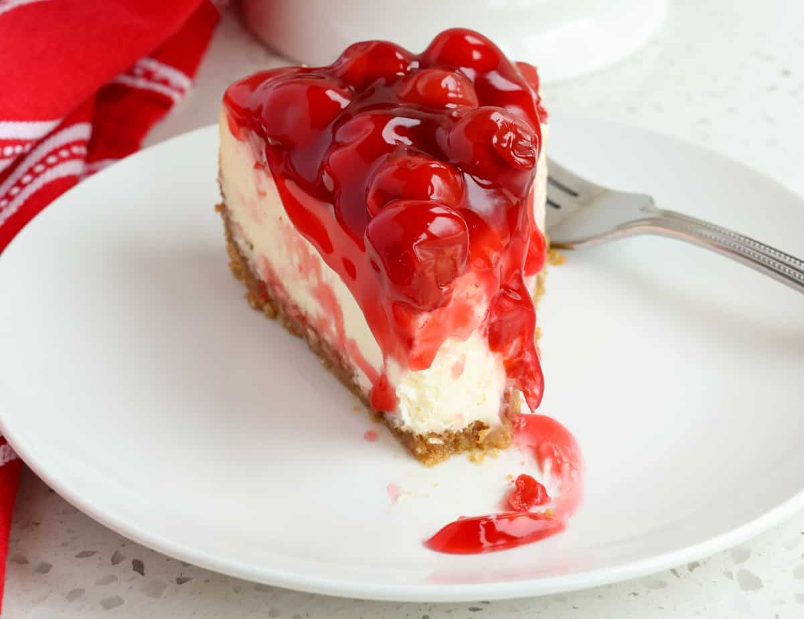

Cherry Cheesecake Recipe

Description
Is there anything more classic than a slice of cherry cheesecake? Creamy, tangy cheesecake filling with a hint of almond flavor is topped with cherry pie filling for a slice of perfection.
Ingredients
- 1 9-inch graham cracker crust
- 1 cup granulated sugar
- 32 ounces cream cheese room temperature
- 4 large eggs room temperature
- 2 teaspoons pure vanilla extract
- ½ teaspoon almond extract
- ⅓ cup heavy cream
- Homemade cherry pie filling
Steps
- Preheat oven to 350°F. Bring a kettle of water to boil for the water bath.
- In the bowl of a stand mixer fitted with the paddle attachment, or in a large bowl with an electric mixer, beat the cream cheese and the sugar for about 2 minutes. Scrape down the sides of the bowl and mix for an additional 30 seconds. Add in eggs, one at a time, scraping down the sides of the bowl after adding the second and fourth egg. After adding the final egg and scraping the sides of the bowl, mix again for 30 seconds. The mixture should be smooth and creamy. Add in the vanilla, almond extract, and heavy cream and mix for an additional 30 seconds.
- Pour the cheesecake filling over the prepared crust.
- Place pan into a larger pan (I use a roasting pan) and pour boiling water into the larger pan until halfway up the sides of the cheesecake pan. Gently lay a piece of foil over the pan - do not tighten the foil as we want to allow the air to still circulate.
- Bake 55-65 minutes, the edges will appear to be set, but the center will still have some jiggle to it. At this point, turn off the oven, and leave the oven door cracked. Allow the cheesecake to rest in the cooling oven for one hour.
- After one hour has passed, carefully remove the cheesecake from the water bath and place on a cooling rack to cool completely. Once the cake is completely cooled, place it into the refrigerator for at least 8 hours.
- Just before serving, top the cheesecake with cherry pie filling.